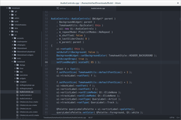
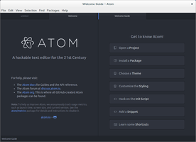
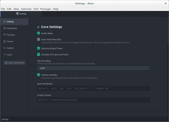
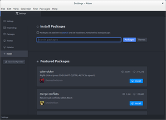

Atom
Dieser Artikel wurde für die folgenden Ubuntu-Versionen getestet:
Ubuntu 16.04 Xenial Xerus
Ubuntu 14.04 Trusty Tahr
Zum Verständnis dieses Artikels sind folgende Seiten hilfreich:
Atom  ist ein Texteditor, der von GitHub entwickelt wird und unter der MIT-Lizenz steht. Er basiert auf dem Webbrowser Chromium und dem JavaScript-Framework Node.js. Zusätzlich sind in Atom eine Git-Versionsverwaltung und der Paketmanager
ist ein Texteditor, der von GitHub entwickelt wird und unter der MIT-Lizenz steht. Er basiert auf dem Webbrowser Chromium und dem JavaScript-Framework Node.js. Zusätzlich sind in Atom eine Git-Versionsverwaltung und der Paketmanager apm integriert. Letzterer macht es einfach, Programmfunktionen durch Erweiterungen zu ergänzen, die von der Entwicklergemeinschaft entwickelt und gewartet werden.
Funktionsübersicht:
Syntaxhervorhebung
Code-Schnipsel-Verwaltung
Auto-Vervollständigung
große Anpassbarkeit
Vielzahl an Erweiterungen und Themen
Git-Anbindung
Derzeit besitzt Atom noch keine deutschsprachige Oberfläche, und die Linux-Version kann sich im Gegensatz zu der von Windows und macOS nicht selbständig aktualisieren.
| Atom | ||
| Atom
 | ||
| Entwickler: | github | |
| Erste Veröffentlichung: | 26. Juni 2015 | |
| Sprache: | | |
| Lizenz: | MIT-Lizenz | |
| Programmiersprache: | C++ und CoffeeScript | |
| Kategorie: | Editor | |
| Installation: | Fremdpaket, PPA | |
Installation¶
Das Programm ist nicht in den offiziellen Paketquellen enthalten.
Snap-Paket¶
Für Ubuntu-Versionen, welche snap unterstützen, kann die aktuellste, stabile Version als snap-Paket installiert werden:
snap install atom
Fremdpaket¶
Von der Entwicklerseite  kann das Fremdpaket atom-amd64.deb heruntergeladen (ca. 70 MiB; nur 64-bit-Systeme!) und manuell installiert[1] werden.
kann das Fremdpaket atom-amd64.deb heruntergeladen (ca. 70 MiB; nur 64-bit-Systeme!) und manuell installiert[1] werden.
Hinweis!
Fremdpakete können das System gefährden.
PPA¶
Alternativ steht ein inoffizielles "Personal Packages Archiv" (PPA)[2] zur Verfügung. Im Gegensatz zum auf der Entwicklerseite verfügbaren Programmpaket werden dort auch 32-bit-Systeme unterstützt.
Adresszeile zum Hinzufügen des PPAs:
ppa:webupd8team/atom
Hinweis!
Zusätzliche Fremdquellen können das System gefährden.
Ein PPA unterstützt nicht zwangsläufig alle Ubuntu-Versionen. Weitere Informationen sind der  PPA-Beschreibung des Eigentümers/Teams webupd8team zu entnehmen.
PPA-Beschreibung des Eigentümers/Teams webupd8team zu entnehmen.
Damit Pakete aus dem PPA genutzt werden können, müssen die Paketquellen neu eingelesen werden.
Nach dem Aktualisieren der Paketquellen kann folgendes Paket installiert werden[3]:
atom (ppa)
 mit apturl
mit apturl
Paketliste zum Kopieren:
sudo apt-get install atom
sudo aptitude install atom
Benutzung¶
Nach der Installation startet[4] man das Programm entweder über die Eingabe des Programmnamens in der Dash oder - bei Ubuntu-Varianten mit einem Anwendungsmenü - über den Eintrag "Entwicklung → Atom". Beim ersten Programmstart öffnet sich ein Willkommensfenster, welches die grundlegenden Funktionen des Editors vorstellt. Im linken Bereich befindet sich der Verzeichnisbaum für das aktuelle Projekt, in dem großen Feld in der Mitte steht der Code. Man kann auch das Fenster beliebig unterteilen. Dazu muss man nur mittels Rechtsklick  an beliebiger Stelle das Menü aufrufen.
an beliebiger Stelle das Menü aufrufen.
Syntaxhervorhebung¶
Durch die Syntaxhervorhebung werden die wichtigsten Regeln für die jeweilige Programmiersprache farblich hervorgehoben. Um diese zu aktivieren wird entweder die neue Datei mit der entsprechenden Endung gespeichert, oder unten rechts im Fenster die Programmiersprache ausgewählt.
Zusätzlich zu den vorhandenen Syntaxhervorhebungen kann man weitere Sprachen als Erweiterungen nachinstallieren. Dafür sucht man in den Einstellungen im Reiter "Install" nach Erweiterungen, die "language" im Namen enthalten.
Automatische Vervollständigung¶
Je nach gewählter Programmiersprache unterstützt Atom den Anwender durch automatische Code-Vervollständigung. Wenn ein Code-Schnipsel verfügbar ist, wird dies direkt unterhalb des eingegebenen Textes angezeigt. Mit einem Klick auf die Tab ⇆ -Taste lässt sich der Code vervollständigen.
Außerdem besteht auch die Möglichkeit, eigene Code-Schnipsel anzulegen. Dafür wählt man im Menü "Edit → Open Your Snippets". Details sind dem offiziellen Handbuch zu entnehmen.
Command Palette¶
Die "Command Palette" kann man über die Tastenkombination Strg + ⇧ + P aufrufen. Es öffnet sich ein Menü für alle verfügbaren Befehle, die man über eine Suchfunktion auch schnell finden kann.
Einstellungen¶
Die Einstellungen von Atom erreicht man entweder über das Menü "Edit → Preferences" oder über die Tastenkombination Strg + , .
Sie unterteilen sich in fünf Reiter. Von der Codierung bis hin zur verwendeten Schriftart und Größe kann man im Reiter "Settings" die grundlegenden Verhaltensweisen des Editors einstellen. Im zweiten Reiter "Keybindings" findet man alle voreingestellten Tastenbelegungen und kann diese dort bei Bedarf anpassen. Im Reiter "Packages" findet man alle installierten Pakete und kann diese dort verwalten, deaktivieren oder entfernen. Der Reiter "Themes" ermöglicht die Einrichtung der Oberfläche und das Aussehen der verwendeten Syntaxhervorhebung.
Über den Reiter "Updates" kann man nach Aktualisierungen für die installierten Paketen suchen und gegebenenfalls direkt installieren. Neue Pakete und Themen kann über den Reiter "Install" suchen und direkt installieren.
|  |
| Willkommenseite beim ersten Start |
|  |
| Einstellungen |
|  |
| Installation von neuen Paketen |
Problembehebung¶
Datenauswertung durch Google Analytics verhindern¶
Atom hat automatisch eine Erweiterung installiert, welche Benutzerinformationen an Google Analytics sendet. Möchte man dies nicht, dann muss man die Erweiterung in den Einstellungen unter "Settings → Packages → Metrics" deaktivieren.
 Programmübersicht
Programmübersicht- Erstellt mit Inyoka
-
 2004 – 2017 ubuntuusers.de • Einige Rechte vorbehalten
2004 – 2017 ubuntuusers.de • Einige Rechte vorbehalten
Lizenz • Kontakt • Datenschutz • Impressum • Serverstatus -
Serverhousing gespendet von